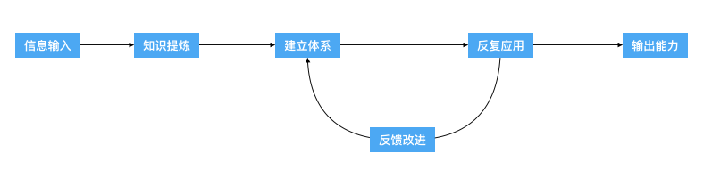

- 00 开篇词 程序行知：走在同样的路上，遇见自己的风景.md
- 01 初心：为什么成为一名程序员？.md
- 02 初惑：技术方向的选择.md
- 03 初程：带上一份技能地图.md
- 04 初感：别了校园，入了江湖.md
- 05 架构与实现：它们的连接与分界？.md
- 06 模式与框架：它们的关系与误区？.md
- 07 多维与视图：系统设计的思考维度与展现视图.md
- 08 代码与分类：工业级编程的代码分类与特征.md
- 09 粗放与精益：编程的两种思路与方式.md
- 10 炫技与克制：代码的两种味道与态度.md
- 11 三阶段进化：调试，编写与运行代码.md
- 12 Bug的空间属性：环境依赖与过敏反应.md
- 13 Bug的时间属性：周期特点与非规律性.md
- 14 Bug的反复出现：重蹈覆辙与吸取教训.md
- 15 根源：计划的愿景——仰望星空.md
- 16 方式：计划的方法——脚踏实地.md
- 17 检视：计划的可行——时间与承诺.md
- 18 评估：计划的收获——成本与收益.md
- 19 障碍：从计划到坚持，再到坚持不下去的时候.md
- 20 执行：从坚持到持续，再到形成自己的节奏.md
- 21 信息：过载与有效.md
- 22 领域：知识与体系.md
- 23 转化：能力与输出.md
- 24 并行：工作与学习.md
- 25 时间：塑造基石习惯（上）——感知与测量.md
- 26 时间：塑造基石习惯（下）——切割与构建.md
- 27 试试：一种“坏”习惯.md
- 28 提问：从技术到人生的习惯.md
- 29 偏好：个人习惯的局限与反思.md
- 30 写作：写字如编码.md
- 31 画图：一图胜千言.md
- 32 演讲：表达的技术.md
- 33 定义：阶梯与级别.md
- 34 晋升：评定与博弈.md
- 35 关系：学徒与导师.md
- 36 核心：安全与效率——工程技术的两个核心维度.md
- 37 过程：规模与协作——规模化的过程方法.md
- 38 思维：科学与系统——两类问题的两种思维解法.md
- 39 职业倦怠：如何面对？.md
- 40 局部最优：如何逃离？.md
- 41 沟通之痛：如何改变？.md
- 42 技术停滞：如何更新？.md
- 43 无法实现：困扰与反思.md
- 44 完成作品：理想与现实.md
- 45 代码评审：寄望与哀伤.md
- 46 人到中年：失业与恐惧.md
- 47 该不该去创业公司？.md
- 48 该不该接外包？.md
- 49 技术干货那么多，如何选？.md
- 50 技术分歧，如何决策？.md
- 51 技术债务，有意或无意的选择？.md
- 52 选择从众，还是唯一？.md
- 53 选择工作，还是生活？.md
- 54 侠客行：一技压身，天下行走.md
- 55 江湖路：刀剑相接，战场升级.md
- 56 御剑流：一击必杀，万剑归心.md
- 57 三维度：专业、展现与连接.md
- 58 三人行：前辈、平辈与后辈.md
- 59 三角色：程序员、技术主管与架构师.md
- 60 三视角：定位、自省与多维.md
- 61 工作之余，专业之外.md
- 62 跨越断层，突破边界.md
- 63 成长蓝图，进化跃迁.md
- 尾声 始于知，终于行.md
23 转化：能力与输出
个人，建立好了知识体系，各方面都明了了，但有时做起事来却还会感觉发挥不出来；团队，牛人众多，但感觉做出的事情效果却很一般。
这类问题的症结，多就出在从体系积累到输出转化的环节，它涉及两个实体的转化问题：
- 个体
- 团队
个体
关于个体的能力转化，我想先讲一个发生在我自己身上的故事，通过类比想必你就能很快明白这个道理。
前几年有几部华语电影，比如《叶问》《一代宗师》等，都是和一个人、一套功夫有关；而从前年到去年的一段时间，在我身上正好就发生了这么一件计划外的事情，我去接触学习了一下咏春。练拳这个事，一开始就不在我计划内，甚至也不算是兴趣内的事，但它就这么发生了，然后还意外地让我有了一些收获。
在刚开始时，我的确对咏春有很多疑惑，但好在并不排斥。一开始老师并没有教什么招式套路，而是从架构开始。既然是功夫，当然这个 “架构” 就是指身体架构了。为什么不讲招式，而是讲架构？这也是我最初的疑惑。随后，老师用一个生动的示例说明了缘由。
老师先拿上一个挡在胸前上的沙包，让我们挥拳全力击打，他来挡住。然后我们就全力挥拳了，阵势倒是挺大，打在沙包上也砰砰脆响，但老师纹丝不动。反过来，该我拿沙包挡在胸前了，老师出拳，拳头接触沙包后发出沉闷的响声，我用尽全身力气也站不住，连连后退，直到碰到墙边才止住退势，并且胸口还隐隐作痛。
好吧，以上描写，有点武侠小说的感觉了，但实际并无夸张。以后每次老师演示沙包架构教学，各位同学都连连谦让起来。这里面的原理后来听老师讲解才算明了：我们平常出拳基本都是用的臂力，力量不会太大；而老师出拳用的是身体之力，借助身体架构发全身之力。
力，从脚底触地而起，由腿上腰，扭腰推至背肩，再甩肩推臂，经腕至拳，最后触及被击打之物。在这个过程中，全身都会随这股力量而动，借助全身体重的推动力，会大幅度地放大这股力量。这股力量甚至超过了他的体重，试想一个成年人那么重的力量推向你，你如何能接得住？
后来，我了解到，经过职业训练的拳击手，正常挥出重拳的力量可以是体重的好几倍。而我们普通人挥拳只用手臂发力，只有体重的几分之一。因为我们没有经过身体架构的训练，所以身体架构各自配合脱节，力量便耗散在了过程之中，而发不出全身之力。
身体是一个系统，身体架构是一个体系，这个体系的输出能力便是出拳的力量。
要放大这个力量，就需要不断反复地去协调应用这个体系，并不断得到反馈修正，最后形成肌肉记忆的习惯，就像老师一挥拳就能爆发全身之力一样。而我练习了几个月，估计也没到半身之力，这个过程和所有技能的刻意练习过程一样，快不了。
同理，我们从学会一个知识，到能够熟练应用其去输出能力，大概会经历如下过程：

所以，对于个体而言，刚建立起一个初步的知识体系，到能真正充分发挥出这个体系的力量，才仅仅是刚开始。
团队
如果说个体的能力输出像出拳，那么团队的输出就像战争了。
在近年来大热的美剧《权力的游戏》中，一开始有两个家族，北方的狼家族和南方的狮家族，他们爆发了一场战争。战争之初，狼家族在战场上连战连胜，甚至一度俘虏了狮家族的重要人物，但后来突然急转直下，竟被人在战场之外全灭。
而战争其实是发生在两个体系（这里的体系是国家、家族和部落）之间的能力较量。每一个战场、每一场战役仅仅是体系中一些“点”的较量，虽然北境的狼家族一开始在战场上连连获胜，但他们这个内部体系的薄弱环节和问题远多于狮家族这个体系，因而在被人抓住关键节点后，一下就瓦解了。
团队这个体系比较复杂，即使个体的点很强，但仅仅是点的强化，也有可能不断赢了战役，但最后却输了整个战争。
去年也有一本大热的翻译书籍《原则》，该书的作者是雷·达里奥，他是世界最大对冲基金——桥水联合基金——的创始人。这本书描述了他的一个思想和实践，就是把公司当作 “机器” （原文是 Machine）来管理运转。
所以，在他看来管理者就像是工程师，而工程师维护机器运转的工作状态我们都能想象到，或通过机器的运行仪表盘监控机器的运转状态，或通过指标优化机器的运行效率。而达里奥的 “机器” 就是他建立的管理公司的体系。
曾经，我们团队有个高级测试工程师，在他晋升测试架构师级别的述职时，提到他的一项工作就是搭建测试体系来帮助团队改善测试工作的效率和效果。在进行阐述时，他完整地描述了这个体系 “机器” 的各个零部件组成，他制造的很多工具和系统，却缺失了关于体系的一些最重要的方面：这个体系是如何运转的？它提供了哪些系统和仪表盘监控指标来支撑和反映其运转状态？为什么这个体系能在团队里运转？
以上三个问题，就反映了 “机器” 体系的三个核心点：
- 流程规则
- 工具系统
- 规范共识
没有流程规则，“机器” 体系就不知该如何运转；缺乏工具系统支撑，就没法监视和控制这个体系的运转效率与效果；而如果未能在团队形成共识并达成规范，“机器” 体系就不可能“和谐”运转起来。所以，流程规则，建立其运行轨道；工具系统，支撑其高效运行；规范共识，形成了协调合奏。
团队能力输出就是这样一个 “机器” 体系运行的过程。那么团队的强弱就由两方面决定，一是团队中所有个体形成的体系力量之和，二是由流程规则、工具系统和规范共识共同决定的转化效率。
转化
从个体到团队，都是通过搭建体系来积蓄力量，再通过体系的运转来输出能力。
这里的共同思维方式是：体系化、工具化。这是一种标准的工程师思维模式，巧妙的是它依然可以用在非工程的领域。体系，从工程维度看就像生产流水线，而体系的运转就是开动了生产流水线。搭建并调校出一条高转化输出能力的体系生产线，是真正具有核心竞争力和护城河的事情。
前阵子，看到新闻说台积电计划投资 250 亿美元研发建设 5 纳米制造生产线，这个投资额很好地说明了搭建一个真正具有护城河级别竞争力的生产体系所需要的成本。而台积电正是靠着这样具有核心竞争力的生产体系，成为全球半导体生产制造的霸主，制造了全球 60% 的芯片。
所以我们也要像台积电学习，好好打磨出适合自己的体系，使其真正成为自己的核心竞争力。
要想产生更大的成果，取得更大的成功，我们需要找到放大个体或团队能力的杠杆支点。曾经，也许我们也做出过好的产品，产生过好的结果，可能是我们能力不错，但也有可能只是运气不错。也就是说，好产品或好结果并不能成为支点，不断产出好结果或好产品的 “体系流水线” 才是。
我们需要做的就是不断打磨这条流水线，提升转化输出好产品或好结果的效率与良品率。
个体和团队的强弱，一方面取决于我们在体系中积蓄的力量的总量，另一方面在于体系运作的转化输出率。体系决定了力量的总量，而转化决定了拳拳到肉的痛感。
每个人做事都存在转化输出率，读完本文，你对自己或所在团队的转化输出率的提升是否有了大概的方向？
© 2019 - 2023 Liangliang Lee. Powered by gin and hexo-theme-book.